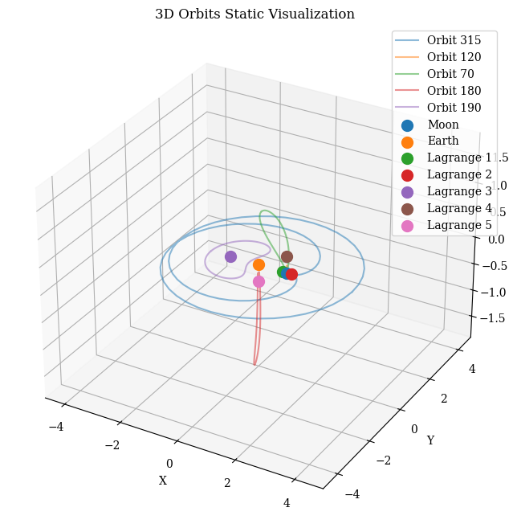
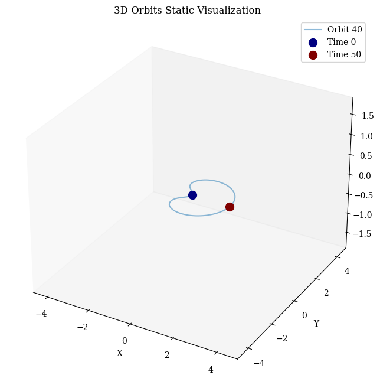

from orbit_generation.data import get_example_orbit_data
from orbit_generation.constants import EM_POINTSVisualization
Necessary scripts to visualize orbits
Points
plot_3d_points
plot_3d_points (data, labels=None, plot_velocity=True, arrow_width=0.005, show_legend=True, figsize=(10, 8))
*Plots each point in space with a 3D arrow based on the first 3 coordinates (position) and optionally the next 3 coordinates (velocity).
Parameters: data (numpy.ndarray): Array of shape (samples, 3) for positions or (samples, 6) for positions and velocities. - data[:, 0:3] represents the 3D positions (x, y, z) - data[:, 3:6] represents the velocity components (vx, vy, vz) if provided labels (list of str): Optional list of labels for color coding the points. plot_velocity (bool): If True and velocities are provided, plot arrows representing velocity vectors. arrow_width (float): Width of the arrows. show_legend (bool): If True, show the legend for color coding. figsize (tuple): Size of the figure in inches (width, height). Default is (10, 8).*
Orbits
Static
visualize_static_orbits
visualize_static_orbits (data:numpy.ndarray, time_instants:Optional[List[int]]=None, orbit_indices:Optional[List[int]]=None, point_dict:Optional[Dict[str,tuple]]=None, show_legend:bool=True, save_path:Optional[str]=None, plot_reference_box:bool=True, title:Optional[str]=None, orbit_names:Optional[List[str]]=None, equal_aspect:bool=False)
*Visualizes orbits in 3D space and highlights specified time instants for each selected orbit.
Args: data (np.ndarray): The orbit data with shape (num_orbits, 6, num_time_points). time_instants (Optional[List[int]]): Time points to highlight; defaults to None. orbit_indices (Optional[List[int]]): Indices of orbits to visualize; defaults to all. point_dict (Optional[Dict[str, tuple]]): Dictionary of extra points to plot. show_legend (bool): Flag to indicate whether to show a legend. save_path (Optional[str]): Path to save the figure; defaults to None. plot_reference_box (bool): Flag to indicate whether to plot the reference box. title (Optional[str]): Custom title for the plot. orbit_names (Optional[List[str]]): Custom names for orbits; defaults to “Orbit {index}”. equal_aspect (bool): Flag to enforce equal scaling for all axes.
Returns: None*
| Type | Default | Details | |
|---|---|---|---|
| data | ndarray | The orbit data with shape (num_orbits, 6, num_time_points). | |
| time_instants | Optional | None | Time points to highlight; defaults to None. |
| orbit_indices | Optional | None | Indices of orbits to visualize; defaults to all. |
| point_dict | Optional | None | Dictionary of extra points to plot. |
| show_legend | bool | True | Flag to indicate whether to show a legend. |
| save_path | Optional | None | Path to save the figure; defaults to None. |
| plot_reference_box | bool | True | Flag to indicate whether to plot the reference box. |
| title | Optional | None | Custom title for the plot. |
| orbit_names | Optional | None | Custom names for orbits; defaults to “Orbit {index}”. |
| equal_aspect | bool | False | Flag to enforce equal scaling for all axes. |
| Returns | None |
visualize_orbits_minimal
visualize_orbits_minimal (data:numpy.ndarray, orbit_indices:Optional[List[int]]=None, time_instants:Optional[List[int]]=None, save_path:Optional[str]=None)
Visualizes orbits in 3D space with a completely blank background (no axes, no labels, no grid).
| Type | Default | Details | |
|---|---|---|---|
| data | ndarray | The orbit data with shape (num_orbits, 6, num_time_points). | |
| orbit_indices | Optional | None | Indices of orbits to visualize; defaults to all. |
| time_instants | Optional | None | Time points to highlight; defaults to None. |
| save_path | Optional | None | Path to save the figure; defaults to None. |
| Returns | None |
visualize_orbits_comparison
visualize_orbits_comparison (data1:numpy.ndarray, data2:numpy.ndarray, title1:Optional[str]='Set 1', title2:Optional[str]='Set 2', equal_aspect:bool=False, title_size:int=18, title_pad:float=20.0, shared_scale:bool=False, wspace:float=0.3)
*Visualizes two sets of orbits side by side in 3D space.
Args: data1 (np.ndarray): First set of orbit data with shape (num_orbits, 6, num_time_points) data2 (np.ndarray): Second set of orbit data with shape (num_orbits, 6, num_time_points) title1 (str): Title for the first plot title2 (str): Title for the second plot equal_aspect (bool): Flag to enforce equal scaling for all axes title_size (int): Font size for the plot titles title_pad (float): Padding between plot and title in points. Default is 20.0 shared_scale (bool): If True, both plots will share the same scale and limits wspace (float): Width spacing between subplots. Default is 0.3.
Returns: None*
orbit_data= get_example_orbit_data()
orbit_data.shape(200, 6, 300)visualize_static_orbits(data= orbit_data, orbit_indices=[15,20,70,140,190], point_dict=EM_POINTS)
visualize_static_orbits(data= orbit_data,time_instants=[0,50], orbit_indices=[0,20,40], plot_reference_box=False)
Dynamic
export_dynamic_orbits_html
export_dynamic_orbits_html (data:numpy.ndarray, time_instants:Optional[List[int]]=None, orbit_indices:Optional[List[int]]=None, point_dict:Optional[Dict[str,tuple]]=None, filename:str='orbits.html')
Generates an interactive 3D visualization of orbits and saves it as an HTML file, including the ability to highlight specific time instants and show named points.
| Type | Default | Details | |
|---|---|---|---|
| data | ndarray | Orbit data as a 3D numpy array (num_orbits, 6, num_time_points). | |
| time_instants | Optional | None | Time instants to highlight. |
| orbit_indices | Optional | None | Indices of orbits to visualize. |
| point_dict | Optional | None | Named points as a dict with 3D coordinates. |
| filename | str | orbits.html | Path and name of the file to save the HTML plot. |
| Returns | None |
export_dynamic_orbits_html(data=orbit_data, filename='../data/example_data/example_orbits.html')Visualization saved to ../data/example_data/example_orbits.htmlOrbit Features
plot_histogram
plot_histogram (data, bins=10, title='Histogram', xlabel='Data', ylabel='Frequency')
*Plots a histogram for the given data.
Parameters: data : list, array, or pandas Series The data to be plotted. bins : int, optional Number of histogram bins to use (default is 10). title : str, optional Title of the histogram (default is ‘Histogram’). xlabel : str, optional Label for the x-axis (default is ‘Data’). ylabel : str, optional Label for the y-axis (default is ‘Frequency’).*
plot_grouped_features
plot_grouped_features (df:pandas.core.frame.DataFrame, columns:List[str], group_col:str, plot_type:str, figsize:tuple=(5, 5), fontsize:int=10)
*Group the DataFrame by a specified column and plot the specified type of plot for each column for each group.
Parameters: - df : pd.DataFrame : The DataFrame containing the data. - columns : List[str] : List of column names to plot. - group_col : str : Column name to group by. - plot_type : str : Type of plot (‘violin’, ‘box’, ‘facetgrid’, or ‘histogram’). - figsize : tuple : Size of each subplot (width, height). Default is (5, 5). - fontsize : int : Font size for labels and titles. Default is 10.*
| Type | Default | Details | |
|---|---|---|---|
| df | DataFrame | DataFrame containing the data. | |
| columns | List | List of column names to plot. | |
| group_col | str | Column name to group by. | |
| plot_type | str | Type of plot: ‘violin’, ‘box’, ‘facetgrid’, or ‘histogram’ | |
| figsize | tuple | (5, 5) | Size of the plot (width, height) per subplot |
| fontsize | int | 10 | Font size for labels and titles |
| Returns | None |
plot_value_proportions
plot_value_proportions (data, grid:str='horizontal', show_percentages:bool=True, show_labels:bool=True, percentage_font_size:int=10, label_distance:float=1.1, pct_distance:float=0.85, explode_factor:float=0.1)
Count occurrences of each unique value in data and plot the proportions in pie charts.
| Type | Default | Details | |
|---|---|---|---|
| data | List or array of labels to plot | ||
| grid | str | horizontal | Option to plot in grid (horizontal, vertical, or square) or separate images. |
| show_percentages | bool | True | Option to print or not print percentages. |
| show_labels | bool | True | Option to print or not print labels. |
| percentage_font_size | int | 10 | Font size for percentages. |
| label_distance | float | 1.1 | Distance of labels from center. |
| pct_distance | float | 0.85 | Distance of percentages from center. |
| explode_factor | float | 0.1 | Factor to separate slices. |
| Returns | None |
plot_mean_distance_by_group_column
plot_mean_distance_by_group_column (df, group_column, value_column)
Dataframe
Correlation Matrix
plot_corr_matrix
plot_corr_matrix (dataframe:pandas.core.frame.DataFrame, figsize=(14, 10), cmap='coolwarm', save_path:Optional[str]=None)
*Plots a correlation matrix heatmap with annotations.
Parameters: dataframe (pd.DataFrame): The DataFrame containing the data to be analyzed. figsize (tuple): The size of the figure (width, height). cmap (str): The color map to be used for the heatmap. save_path (Optional[str]): The path to save the plot image. If None, the plot is not saved.
Returns: None: Displays the correlation matrix heatmap.*
Features Summary
summarize_and_test
summarize_and_test (df:pandas.core.frame.DataFrame, group_col:str, features:List[str]=None, visualize:bool=True, figsize:tuple=(10, 40), plot_significant_only:bool=True, plot_continuous:bool=False, show_values:bool=True)
Other
Images
plot_single_image
plot_single_image (image_path, crop_length=0, font_size=17, save_path=None, figsize=(15, 15), title=None)
*Plot a single image with customization options.
Args: image_path (str): Path to the image file. crop_length (int): Number of pixels to crop from each side of the image. font_size (int): Font size for the title. save_path (str): Path to save the plotted image. If None, the image is not saved. figsize (tuple): Size of the figure (width, height). title (str): Title for the image.
Returns: None*
create_image_grid_from_routes
create_image_grid_from_routes (image_routes, crop_length=0, font_size=12, save_path=None, grid_size=(3, 2), hspace=-0.37, label_images=None)
*Create a grid of images from a list of image paths.
Args: image_routes (list): List of image file paths. crop_length (int): Number of pixels to crop from each side of the image. font_size (int): Font size for the experiment label. save_path (str): Path to save the generated grid image. If None, the grid is not saved. grid_size (tuple): Number of rows and columns in the grid. hspace (float): Vertical spacing between grid rows. label_images (list or bool): List of labels for images or a boolean to add default labels.
Returns: None*